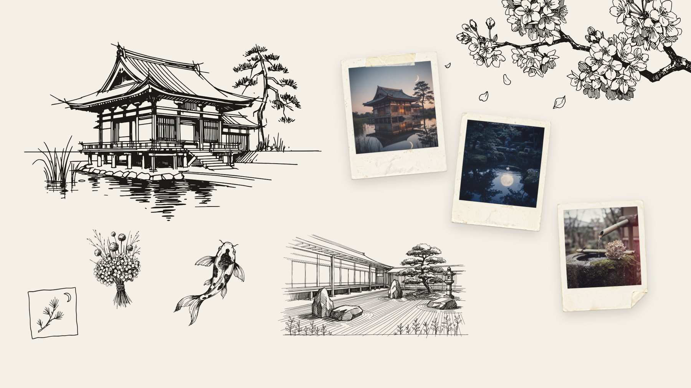
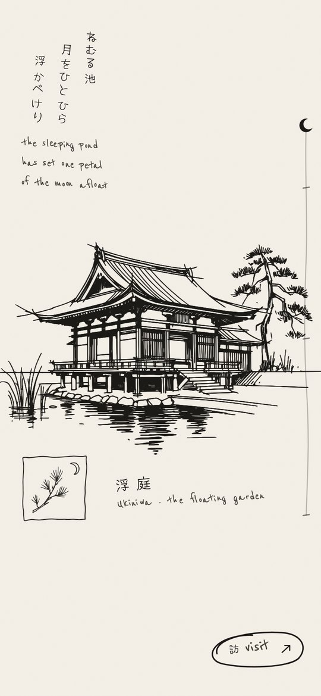
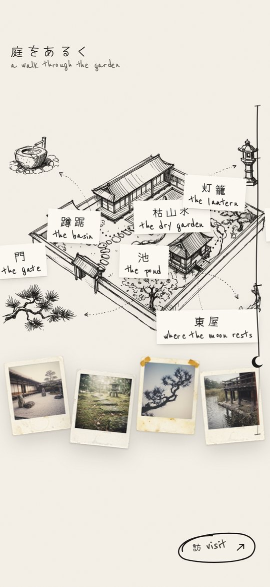

Ukiniwa (浮庭) means the floating garden. It is a concept site for a small Japanese garden, and I wanted moving through it to feel like a dream: pieces of the place drifting in like a collage, the whole page reading like a poem.
I gave myself one rule for it: the absence of complexity makes a design perfect. Every time I wanted to add something, I looked for something already on the page that could do the job instead.
So the whole site is made of very few things. Off-white paper. Black ink. A handful of Polaroids. One stamp. And one motion, a pen drawing a line, which does almost everything.
Walk through it yourself.
The whole site is live: the drawing, the story, the map and the night.
The mark is a hand-drawn hanko stamp: a square with uneven corners, one pine branch and a crescent moon. I explored a dozen line-drawn ideas, from koi to moon windows, and picked the one that looked like it had been pressed onto the page by a person.
It is the only branding on the site, and it never gets bigger than it needs to. The moon in it comes back later as the scrollbar.
too cleanMy first round was precise vector line art. It looked finished, and that was the problem: a dream should look a little unfinished, so I went looser.
The pavilion is not faded in. It is drawn. I traced the centre of every ink line in the sketch, about 3,100 strokes, and ordered them the way a person sketches: the long lines of the roof and posts first, then windows and reeds, then the hatching in the water.
Then I ran it backwards. Scroll down and the pavilion is erased in reverse pen order, hatching first, structure last, and the next drawing begins. The hall, the cherry branch and the map all arrive the same way. The poem and the labels are written letter by letter, and each letter leans a little, as if written quickly.
The decision that shaped everything else: one motion, repeated, instead of a new effect for every scene. It is what makes the site feel calm.
Drawn, not faded
Structure first, then details, then the water. The poem is written beside it and the stamp is pressed on last.
Erased, then the next page
The pen runs backwards, and the hall, the story and three Polaroids arrive in its place.
a slideshowFading one picture into the next read like a slideshow. Drawing and erasing made each scene arrive like a thought.
In the middle of the page sits the garden’s story: a lantern maker who dug a pond under the window of his wife, who could not sleep, so the moon would have somewhere to rest.
The Japanese is written in first, in vertical handwritten columns. The English follows beside it, one sentence at a time, in a plain book type. I kept the English deliberately ordinary. The poetry is in the words, so the type does not need to perform.
The Polaroids are real photographs of the same place, given one shared instant-film grade so they look like one roll of film, set in old frames I aged and then toned back down.

too agedThe first Polaroid frames had coffee rings, grime and deep yellowing. They pulled focus from the photos, so I kept the tape and the folded corners and faded the rest back to clean cream.
Next comes a sketchbook map of the whole garden. Once it is drawn, a dotted path walks from the gate along the stepping stones, around the edge of the raked gravel (nobody walks on the gravel), past the lantern and the pine, and ends at the pavilion.
Each stop is written onto a small paper tag as the path reaches it, Japanese first: 門 the gate, 蹲踞 the basin, 枯山水 the dry garden. A Polaroid drops beside the matching sketch in the margin, so the page fills up like a scrapbook as you walk.
The last stop says 東屋, where the moon rests. It is the same line as the story, which is the same image as the poem on the first screen.
The path walks the garden
Labels are written on paper tags as it passes, and the Polaroids drop by the margin sketches.
hard to readI first wrote the labels and path in red, straight onto the drawing. The real problem turned out to be layering: the map’s ink ran through the words. Lifting the labels onto paper tags in plain ink fixed it, and the red went.
The ending is the night. Ink spreads out from the pavilion with a ragged, soaking edge until the page is black. The stamp is pressed on in white, and the practical part arrives: how to find the gate, when it is open, and how to write.
The small things follow the same rules. The cursor is an ink dot with a loose pen loop trailing it. The scrollbar is a hand-drawn line with the stamp’s crescent moon floating down it, and the little visit button in the corner is a word with a pen loop around it.
Night spreads from the pavilion
A ragged ink edge, then the stamp in white and the details to visit.


The same garden, held in one hand.
On a phone the poem moves above the pavilion, the story stacks into one column, and the map’s Polaroids line up underneath it.
There is no cursor to draw, so the pen stays in the drawings.
Designed, written and coded by me, with Claude in the loop. No templates, no page builder.
 Claude CodeBuilding the site with me
Claude CodeBuilding the site with me HiggsfieldThe stamp ideas, sketches, photos and map
HiggsfieldThe stamp ideas, sketches, photos and map PythonTracing 3,100 pen strokes from the drawings
PythonTracing 3,100 pen strokes from the drawings JavaScriptThe pen, the scroll story and the night
JavaScriptThe pen, the scroll story and the nightGo on, take the walk.
Watch it draw, scroll the story, follow the path, and stay for the night.